UFO/ET/Bigfoot 遭遇に伴う「青い光」の正体は、強電界による大気中の発光現象
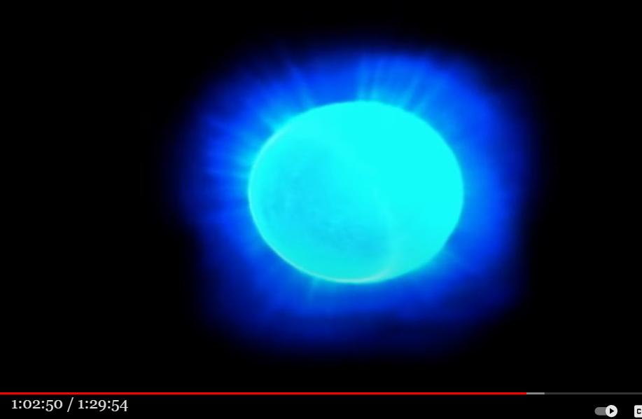
UFO がフラッシュ光を発するのではなく、フラッシュ光が UFO を生み出す
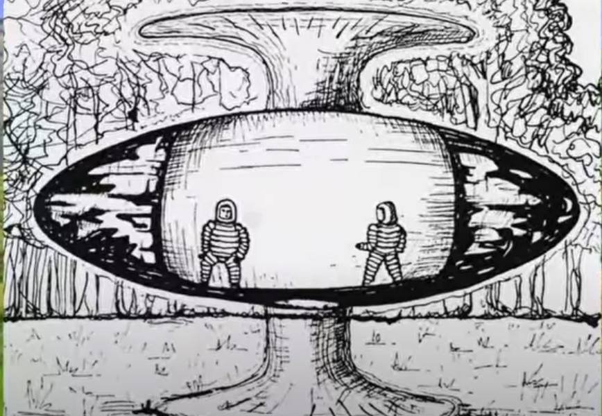
UFO や Bigfoot で車のエンジンが停止する理由
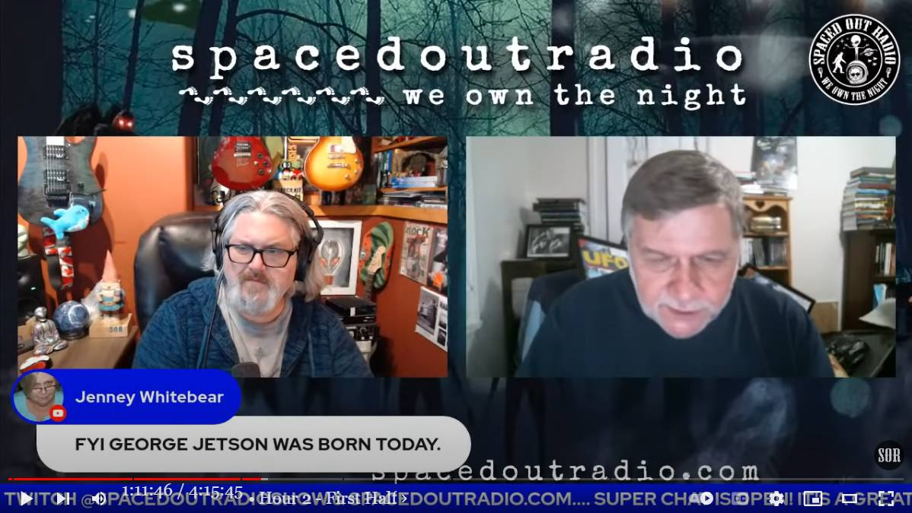
セスナから撮影した葉巻型 UFO の正体
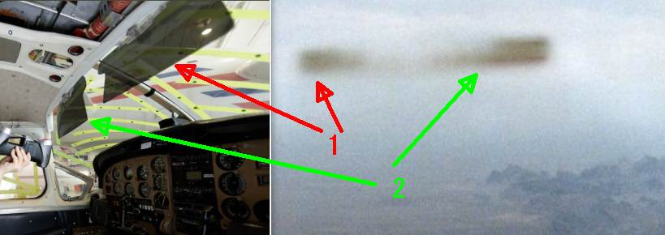
Bruce Maccabee が報告した「プレデター的存在、不思議な写真、UFO」の謎を解く
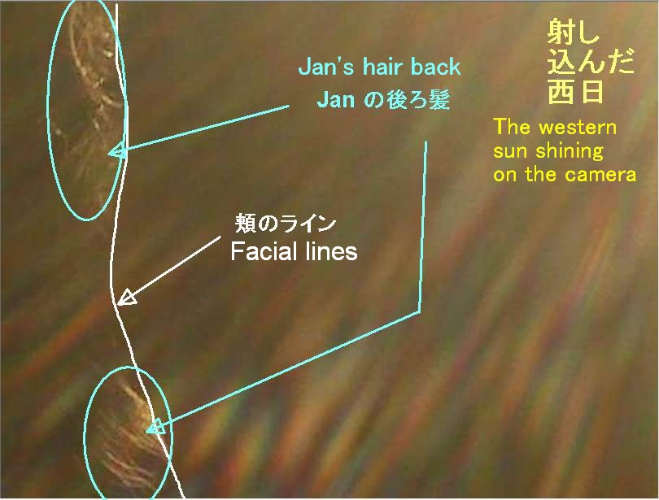
Xendra の正体は「ドーム状の霧」
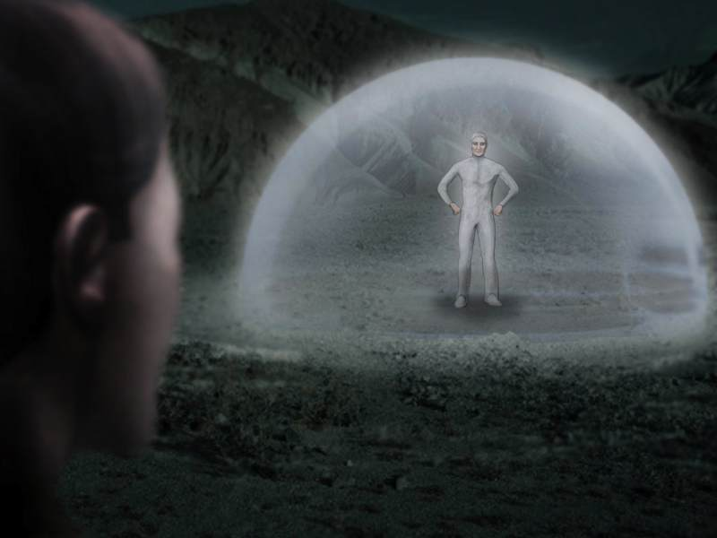 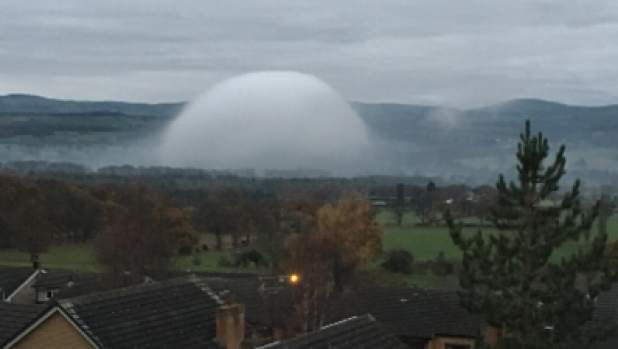
William Tompkins の「UFO 写真」の正体（＋遠隔視の実態）

Richard Dolan : SSP が実在する有力な証拠の一つがコレだ → その正体はたぶん… （＋追加）
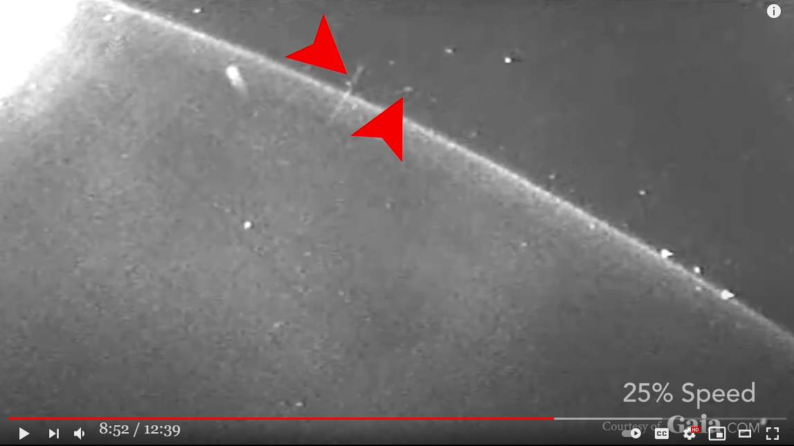 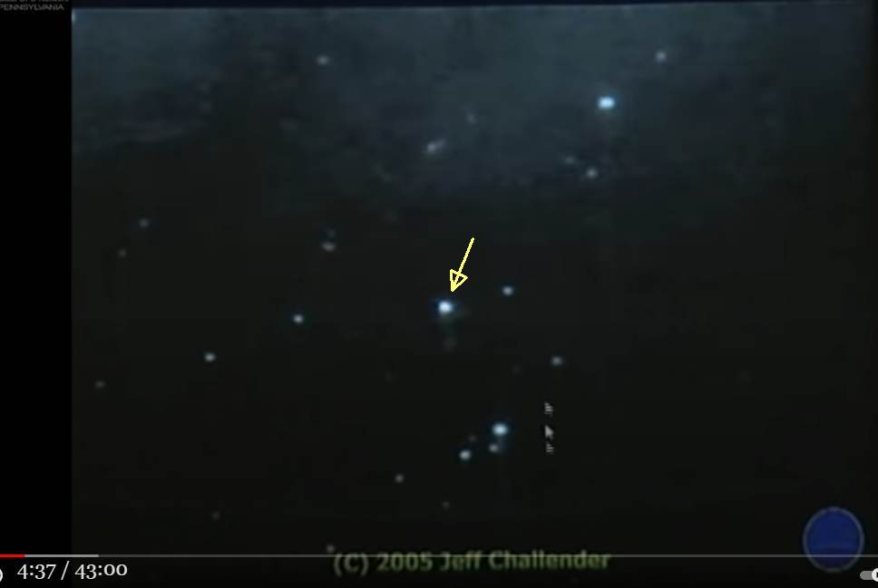
国防総省の科学者が Ray Boeche に見せた「ET との精神的交信実験中に死亡した3名の死亡状態の写真」の謎を解く

体に Orb が入り込み、腫瘍が快癒。その Orb の動画 （→ 確実に捏造 HOAX）
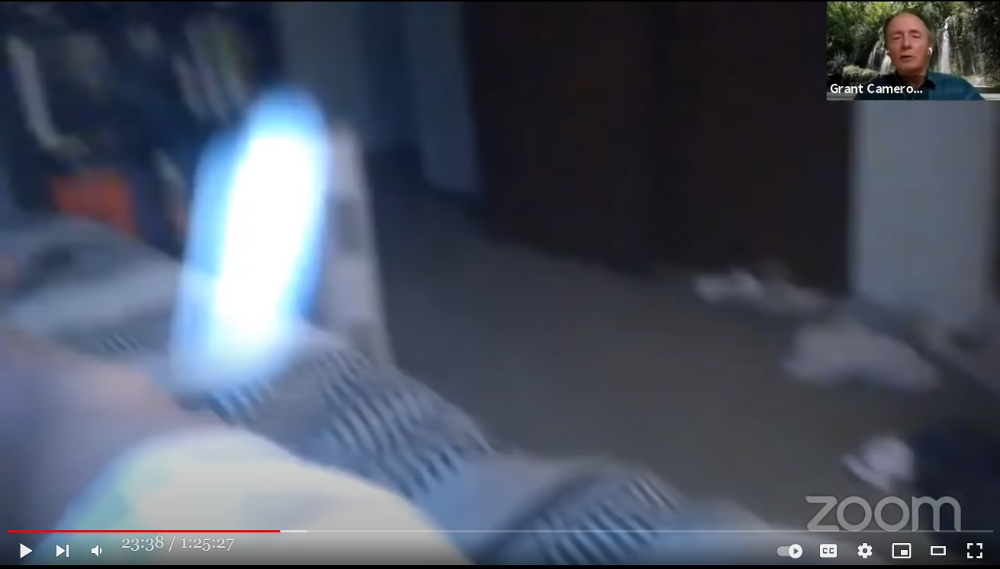
2009-05-22 メキシコ : 白昼、空の球体が分離して多数の小球体が直線上に延びる → たぶん自然現象
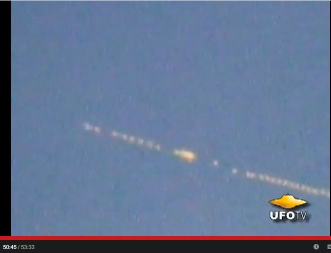 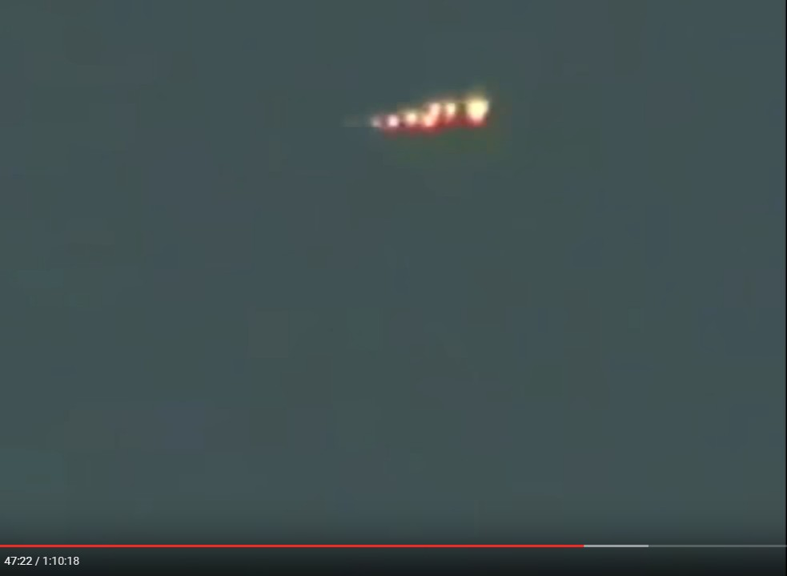 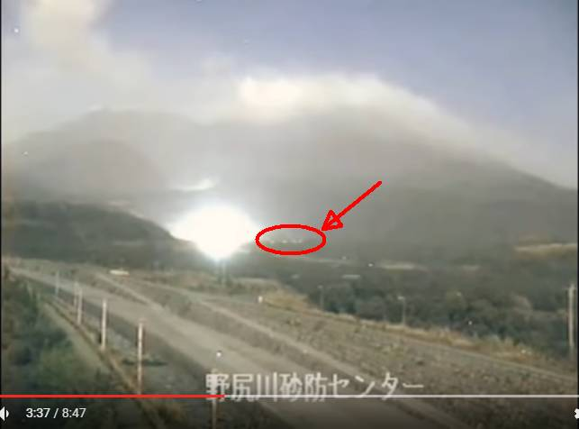 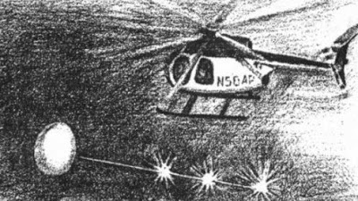
ECETI Ranch で頻繁に目撃される UFO の正体は、地殻の圧力が生成した球電だろう。
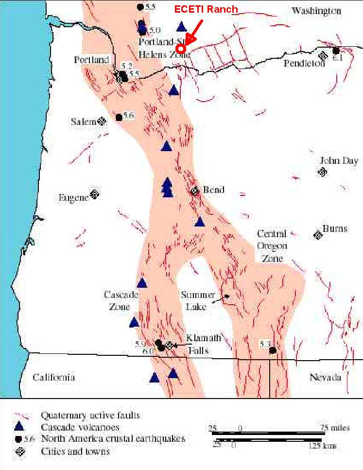
仮説：挫折や絶望がシャーマン的開眼を引き起こす理由。UFO/abduction 現象との深い関係
Colm A. Kelleher: 国防総省の極秘UFO計画、ヒッチハイカー効果、伝染病のモデル
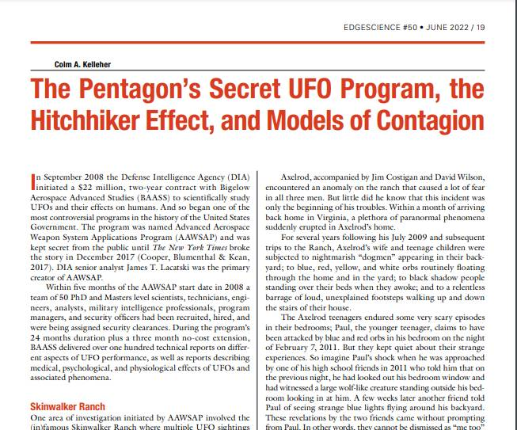